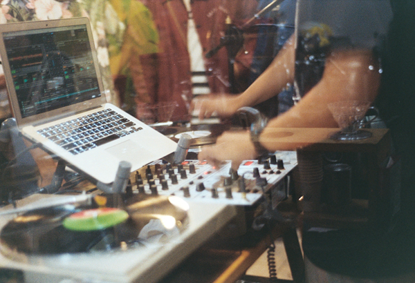

Chris Lovett's
Audio Portfolio
This contains my production work, finished or otherwise!

This contains my production work, finished or otherwise!
This started as a scale writing exercise and ended up becoming one of my favorite test songs. It's got a light tone and good chemistry between all the bright, cheery sounds. It's supposed to sound how a windy day feels.
A song dedicated to and inspired by rainy days. Like most other compositions I make it's very airy and reverb heavy to help give it an ethereal atmosphere. As rain tends to come and go quickly, so does this. I want it also to simulate losing oneself in their thoughts, how it's so easy to just let the mind wander and drift away on a dark and moody day. Not exclusively to equally dark thoughts, too.
I've always loved what sounds people attribute to space. Really far off, atmospheric effects that feel as if you'd never reach them, despite hearing them. They create a vast space yet can also hint at infinite adventure and discoveries. I wanted to capture even just a bit of that feeling with this track here.
This song was always a trial for me. First off to see if I could finish a song, but also to see if I could make an intense electronic piece. It's unusual for me and was a very fun experiment!
This was an experiment for combining existing long-form samples in a way that's cohesive and also catchy. Unfortuantely the source file is gone due to corruption from a data transfer, so this is the "final" version. All the same I'm happy with how it turned out. It taught me a lot of important lessons for mixing, as well as timing!
An old track I've redone countless times, including a hardcore mix! This is the only version I settled on liking, as it conveys the chill, night walk vibe that love about certain ambient tracks.